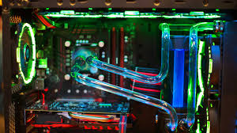

CPU Cooling
The CPU is one of the hottest parts in your PC, so cooling it properly is super important. Without good cooling, your CPU can overheat, throttle (slow itself down), or even shut off to prevent damage.
Air coolers are the most common choice. They’re easy to install, cheap, and reliable. Big heatsinks with larger fans can move a lot of air while staying quiet. On the other hand, liquid coolers use a pump and tubes to move heat to a radiator, which gives better performance and a cleaner look.
Why Cooling Matters
Better cooling means better performance and longer lifespan for your CPU. When your processor stays cool, it can run faster and more stable under heavy workloads like gaming or video editing.
Good airflow in your case helps a lot too — your CPU cooler can’t do much if hot air just stays trapped inside your PC. That’s why case fans and clean airflow paths matter just as much as the cooler itself.